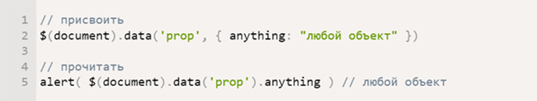

Blog
Articles that I wrote
Articles that I wrote
If we define variable inside the rule it will be available only inside that rule without bloating the global scope. And even more — if we are not sure variable has already been defined somewhere, we use !default keyword in its declaration which says — if value exists in the outer scope then use it else please use this new value.One more mixin’s parameters feature is variable declaration which behaves same as ES6 spread operator. It allows us instead of passing each parameter to mixin individually just pass a list or a map(where map is similar to JS object) and values will be assigned automatically.
So mixins give us great opportunity to pass declaration values(inline, block, #fffff, etc) or even property names(margin-right, color…) but what if we want to pass the whole SCSS block, not only parts of it? We can use content keyword.And what is cool here is that it actually allows me to stop searching for ‘media’ string in IDE each time I wanted to copy and past media query syntax into my code. I don’t need it anymore.
I remember the early days of JavaScript where you needed a simple function for just about everything because the browser vendors implemented features differently, and not just edge features, basic features, like addEventListener and attachEvent. Times have changed but there are still a few functions each developer should have in their arsenal, for performance for functional ease purposes.
JavaScript, along with HTML5 and CSS3, is nowadays used widely by developers for developing responsive web applications that look good on both desktop computers and mobile devices. Despite being a client-side scripting language, JavaScript provides a number of features that help users to build robust websites without writing longer lines of code. Also, JavaScript enables programmers to reducing coding time by using a variety of pre-built functions. As a group of reusable code, functions allow programmers to make the codebase modular, and avoid writing the same piece of code repeatedly. The programmers also have option to take advantage of several pre-built functions in JavaScript.
As a novice frontend developer, an obvious important step is to become familiar with the tools that help your colleagues not to lose their minds in this really challenging field: writing more flexible CSS code using Saas. You are entitled to the opportunity to optimize the transmission speed of the JS files through minification. You have also earned the luxury of automatic JS validation with JSHint.You've earned all these wonderful things.
And so, you start using all the great tools and you have to manually run a huge number of instructions on the command line. From time to time, you forget to run the Sass compiler... Sometimes you forget to run JSHint and miss another bug...And one day you will wonder: is there a way to automate all these tools? How to set up a reliable workflow and avoid most errors? Of course there is a solution and tools that are just waiting for the moment when your hands get to them: Webpack and Gulp.
Jade, initially pushed me away with its syntax, it's still not html, just structured tags. No opening / closing tags - and it's wild at first, but very quickly you realize that it's convenient. And of course - it is the presence of good documentation - for any developer-it is very important.
Another big plus in favor of Jade - is the inheritance of templates! It's super easy (pardon the slang, but it's true). To understand this, look at the views folder from the previous post. We have two files in it - a layout-a basic template that describes the entire structure and index file that inherits from layout (extensions layout) and overrides the content block. Just imagine how much time you save when creating a website.